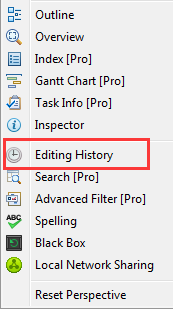
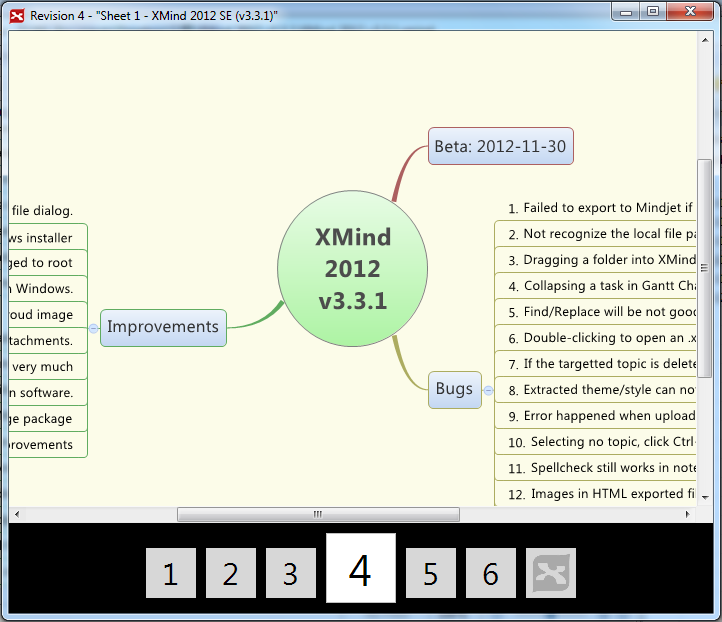

Editing History
XMind can store all saved revisions of a file as a history list. Every revision can be reverted or deleted easily.
Open Editing HistoryClick "Window-Editing History" from file menu
 Handle revisionsSelect a revision and click the button on view toolbar, you can preview, revert, or delete it.
 Navigate revisions
Navigate revisions
Left/right arrow key can help you here to switch among revisions.
Note:
- All these revisions are saved in this .xmind file. And the file size will grow while revision quantity increases.If the file size is too big, please delete the useless revisions.
- If you want to disable this feature, please uncheck the option "Automatically save new revision when saving this workbook" at the bottom of the view.